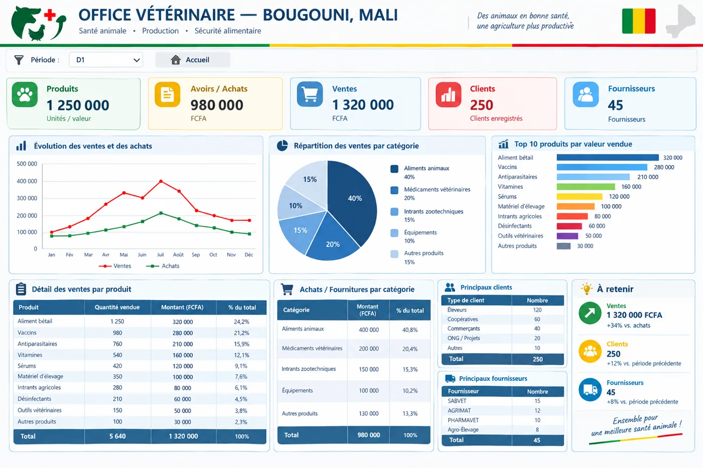

Saisir
Enregistrer les ventes, les lots et péremptions (méthode FEFO : premier expiré, premier sorti), les espèces animales et les catégories de produits.
Outil de gestion · Bougouni, Mali
Un classeur Excel pour suivre le stock, les lots et leurs péremptions, les ventes, le crédit des clients et les pertes d'une officine vétérinaire, avec un tableau de bord et des alertes de réapprovisionnement.
Visite guidée de 3 minutes 20. Les données montrées dans la vidéo sont des données simulées, à remplacer par celles de l'officine.
Ventes, achats, clients et fournisseurs sur une seule page, avec le choix de la période.

Enregistrer les ventes, les lots et péremptions (méthode FEFO : premier expiré, premier sorti), les espèces animales et les catégories de produits.
Un tableau de bord et des alertes de stock par couleur : stock suffisant, à surveiller, rupture proche ou péremption proche.
Une fiche clients avec crédit autorisé et crédit actuel, recalculé automatiquement à partir des ventes.
Un suivi des produits cassés, périmés ou détruits, et un journal des ajustements de stock avec responsable et commentaire.
Une liste des produits à commander, calculée à partir des ventes récentes et des seuils minimums.
Rapports de ventes par catégorie, indicateurs (KPI) et guide d'utilisation intégré au classeur.
Outils Excel, bases de données, tableaux de bord : parlons de votre besoin.
Me contacter